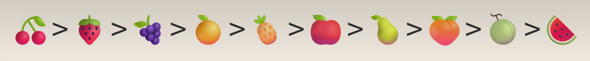
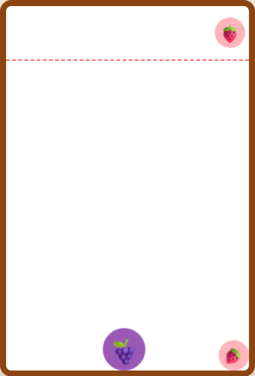
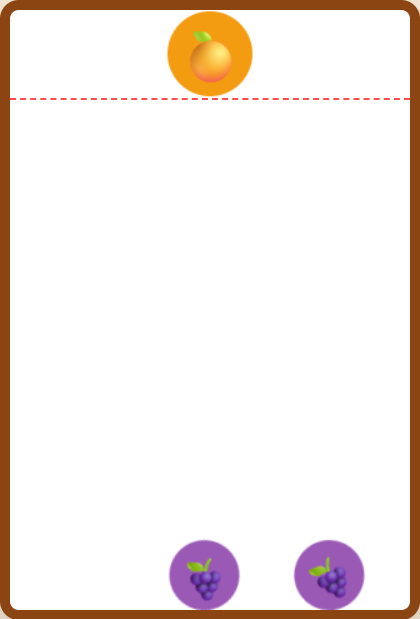

1. ゲームの概要
スイカゲームは、フルーツをボックスの中に落としていくパズルゲームです。同じ種類のフルーツ同士をぶつけると、一回り大きなフルーツに成長する「シンカ」が最大の特徴です。
2. 基本的な遊び方
- 操作方法： 上部のフルーツを左右に動かしてフルーツを落とします。落としたフルーツは転がったり弾んだりします。
- シンカ： 同じフルーツが接触すると、次の段階のフルーツへと変化します。シンカのたびにスコアが加算されます。
- ゲーム終了： フルーツがボックス上部の点線（デッドライン）を超えてしまうと、その時点でゲームオーバーとなります。
3. 特殊ルール：フルーツのシンカ順
フルーツは決まった順序で大きくなります。最終目的は、最も大きな「スイカ」を作ることです。
● シンカのサイクル（全10階）
さくらんぼ → いちご → ぶどう → デコポン → パイナップル → りんご → なし → もも → メロン → スイカ

【シンカの順番】小さいものから順に成長
● ケース1：シンカできる場合
同じ種類のフルーツ同士をぶつけると、一つ大きいフルーツにシンカします。

同じ種類のフルーツを落とす前

同じ種類のフルーツを落とした後
● ケース2：大きな変化（スイカの完成）
メロン同士をぶつけると、ついにスイカが完成します。さらにスイカ同士をぶつけることができれば、スイカが消滅してボックス内に広大なスペースが生まれます。これがハイスコアの鍵です。
4. 攻略のヒント
スイカゲームでは、無計画にフルーツを落とすとすぐに詰んでしまいます。角（端）の使い方が非常に重要です。
重要となるのが「大きいフルーツの固定」です。メロンなどの大きなフルーツを端に配置し、その隣に次に大きいフルーツを並べることで、連鎖が起きやすい安定した「土台」を作ることが勝利への鍵となります。